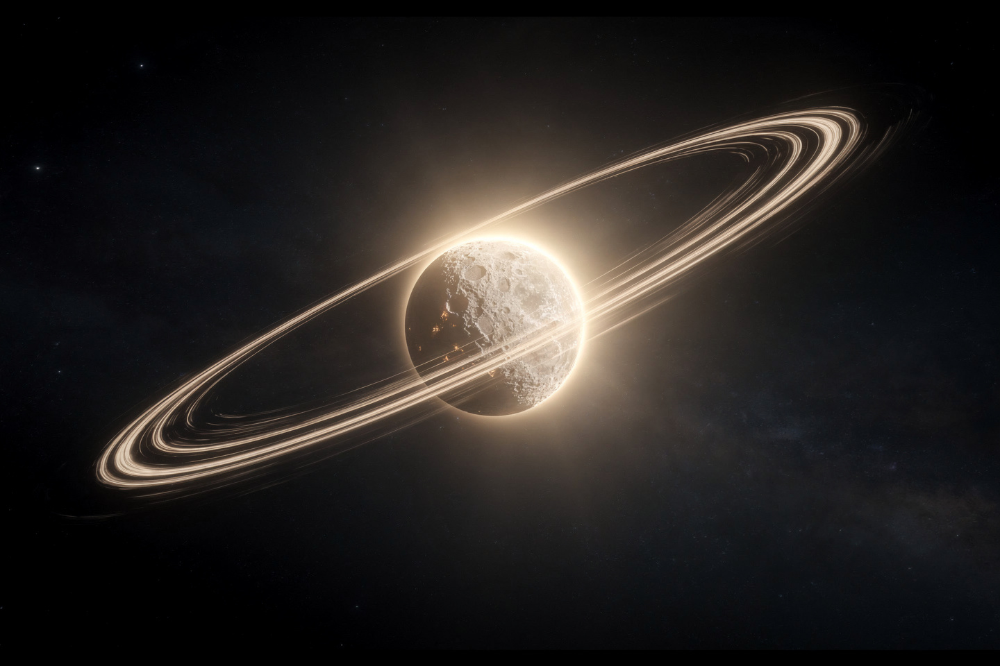

Рабочая заметка · небесная механика · часть VII
Тяготение и орбиты: почему планеты не падают и не улетают
Одна и та же сила, что роняет яблоко, держит Луну на орбите уже 4.5 миллиарда лет — она просто «промахивается» мимо Земли по кругу, а не падает прямо в неё.
Иоганн Кеплер, разбирая наблюдения Тихо Браге, вывел три эмпирических правила движения планет — задолго до того, как Ньютон объяснил, откуда они берутся. Оказалось, что все три закона Кеплера — прямое математическое следствие одной простой силы, убывающей как квадрат расстояния. В этой заметке — закон тяготения, все три закона Кеплера с числовыми примерами, и то, как их вместе используют, чтобы находить планеты у других звёзд.

Четыре закона, одна картина
| Закон | Что говорит |
|---|---|
| Тяготение (Ньютон) | сила притяжения ~ произведение масс / квадрат расстояния |
| Кеплер I | орбита — эллипс, звезда в фокусе, не в центре |
| Кеплер II | равные площади за равные времена — у звезды быстрее, вдали медленнее |
| Кеплер III | квадрат периода ~ куб размера орбиты |
Кеплер нашёл первые два закона в 1609 году и третий — в 1619-м, чисто эмпирически, подгоняя формулы под данные Тихо Браге. Ньютон в 1687 году показал: все три — не отдельные правила, а математические следствия ОДНОЙ силы (§2). Это редкий в истории физики случай, когда закон был открыт «задом наперёд» — от наблюдений к формуле, а не от теории к предсказанию.
Закон тяготения: сила на двоих
Формулировка. Любые два тела притягиваются с силой, пропорциональной произведению их масс и обратно пропорциональной квадрату расстояния между ними:
«Обратный квадрат» — ключевая деталь: увеличьте расстояние втрое, сила упадёт не втрое, а в девять раз. Это же и объясняет, почему орбиты вообще устойчивы (не разлетаются и не схлопываются) — при других показателях степени (не 2) орбиты оказались бы нестабильны к малейшим возмущениям.
Частая путаница: «раз есть притяжение, почему Луна не падает?» Она ПАДАЕТ — постоянно, всё время. Но у неё есть ещё и скорость вбок (по касательной к орбите), и падение ровно компенсирует то, насколько поверхность Земли «убегает вниз» из-за своей кривизны. Ньютон иллюстрировал это мысленным экспериментом «пушка на горе»: чем быстрее выстрелить ядро горизонтально, тем дальше оно улетит, прежде чем упадёт — а при достаточной скорости оно будет «падать» вокруг всей Земли, никогда не долетая до земли. Это и есть орбита.
Первый закон Кеплера: эллипс, не круг
Формулировка. Орбита планеты — эллипс, в одном из фокусов которого находится звезда (не в центре эллипса):
2000 лет до Кеплера все (включая Коперника) считали орбиты идеальными окружностями — «совершенная» форма казалась философски обязательной для небес. Кеплер восемь лет бился над орбитой Марса, пытаясь подогнать окружность под точнейшие данные Тихо Браге, пока не сдался и не попробовал эллипс — тот подошёл идеально с первой попытки.
Эксцентриситет орбиты Земли всего e ≈ 0.017 — почти окружность на глаз, но именно поэтому в январе Земля примерно на 5 млн км ближе к Солнцу, чем в июле (никак не связано с временами года — их вызывает наклон оси, не эллиптичность).
Второй закон Кеплера: равные площади
Формулировка. Отрезок, соединяющий звезду и планету, заметает равные площади за равные промежутки времени:
Синяя и зелёная области на рисунке — два «сектора», заметённых планетой за ОДИНАКОВОЕ время: широкий по углу, но короткий по радиусу у звезды (планета летит быстро, угол пробегает крупный) и узкий по углу, но длинный по радиусу вдали (планета ползёт медленно, угол почти не меняется) — их площади равны. Планета замедляется и ускоряется на глазах в живой анимации выше: следите, как быстро она проходит правый край орбиты (близко к звезде) и как медленно — левый (далеко).
Это не отдельный постулат, а прямое следствие сохранения момента импульса (часть II, §4) — гравитация звезды всегда направлена ВДОЛЬ линии к планете (центральная сила), значит момент силы относительно звезды равен нулю, и L = r × p сохраняется. Раз L постоянен, а r уменьшается у звезды — угловая скорость обязана расти, чтобы компенсировать (ровно та же математика, что у фигуриста, прижимающего руки — часть II, §4).
Третий закон Кеплера: весы для звёзд
Формулировка. Квадрат периода обращения пропорционален кубу большой полуоси орбиты:
Численный пример: гипотетическая планета обращается вокруг Солнца на расстоянии a = 4 а.е. Какой у неё период обращения?
Ровно так был открыт Нептун (1846) — по возмущениям, которые он вносил в орбиту Урана, астрономы вычислили, ГДЕ искать неизвестную планету, ещё до того, как её увидели в телескоп.
Сквозной пример: как находят экзопланеты
Соберём все законы на реальной задаче астрономии: телескоп заметил, что звезда регулярно чуть тускнеет — планета проходит перед ней (транзитный метод), период затмений T = 2 года.
- Из спектра звезды астрономы независимо оценивают её массу: пусть M = 2 M☉.
- Третий закон Кеплера в форме а.е./годы/массы Солнца даёт расстояние планеты до звезды:
Ни одна миссия не летала к этой планете — расстояние вычислено чисто из периода мигания звезды и её массы. Первый закон (§3) уточняет форму орбиты по деталям кривой блеска (симметрия провала подсказывает эксцентриситет), а второй закон (§4) — почему транзиты идут через равные промежутки времени, а не хаотично: угловая скорость планеты предсказуема в любой точке орбиты.
Именно этот метод стоит за большинством статей об экзопланетах на bridge42worlds — телескопы TESS и Kepler (названный в честь того самого Иоганна Кеплера) искали именно такие периодические затмения, и законы из этой заметки — прямая математика, которой пользуются авторы этих статей.
Куда это ведёт: от Кеплера к Эйнштейну
Законы Кеплера-Ньютона работают с огромной точностью почти везде во Вселенной — но не абсолютно точно. Орбита Меркурия (ближайшей к Солнцу планеты, где гравитация сильнее всего) медленно ПОВОРАЧИВАЕТСЯ как целое — эллипс не остаётся на месте, а прецессирует. Ньютоновская механика предсказывает бо́льшую часть этой прецессии (возмущения от других планет), но 43 угловые секунды за столетие оставались необъяснёнными почти 60 лет.
В 1915 году Эйнштейн применил свежевыведенные уравнения общей теории относительности к орбите Меркурия — и получил ровно недостающие 43 угловые секунды, без единого подгоночного параметра. Это было первое реальное экспериментальное подтверждение ОТО, ещё до знаменитого затмения 1919 года с отклонением света звёзд. Сегодня мы знаем: закон тяготения Ньютона — превосходное приближение общей теории относительности при слабых полях и не слишком высоких скоростях, но не последнее слово физики.
На сайте это отдельные законы, если хочется пройти глубже:
Закон всемирного тяготения · Первый закон Кеплера · Второй закон Кеплера · Третий закон Кеплера
Эксперимент дома
Воткните две канцелярские кнопки (или карандаша) в картон на расстоянии 10-15 см друг от друга, накиньте на них петлю из нитки длиной примерно втрое больше расстояния между кнопками. Натяните нитку карандашом и обведите, всё время держа её натянутой.
Что заметить получится настоящий эллипс, а кнопки — его фокусы (§3). Раздвиньте кнопки шире — эллипс станет более вытянутым (больше эксцентриситет); сведите почти вместе — получится почти окружность. Это тот же самый геометрический факт, что «сумма расстояний до двух фокусов постоянна» — на нём буквально держится вся орбитальная механика.
Проденьте прочную нитку через короткую трубку (ручка от старой шариковой ручки подойдёт), с одной стороны привяжите небольшой груз (шайбу, ключ), с другой — держите нитку рукой. Раскрутите груз по кругу над трубкой, затем плавно потяните за свободный конец нитки, укорачивая радиус вращения.
Что заметить груз резко ускорит вращение, когда радиус уменьшится — это механическая версия второго закона Кеплера (§4) и сохранения момента импульса (часть II): натяжение нитки, как и гравитация звезды, направлено строго к центру, поэтому L сохраняется, и при падении r угловая скорость обязана вырасти.
Задачи для проверки
Сначала подумайте сами, затем откройте решение. Решение везде идёт по схеме: Дано → Закон → Решение → Ответ.
1. Расстояние между двумя телами увеличили втрое, массы не изменились. Во сколько раз изменилась сила притяжения?
Дано rнов = 3r.
Закон закон тяготения (§2): F ∝ 1/r².
Решение Fнов/F = r²/(3r)² = 1/9.
Ответ уменьшилась в 9 раз — «обратный квадрат» в действии.
2. Экзопланета обращается вокруг звезды массой 4 солнечных на расстоянии 2 а.е. Найдите период обращения в годах.
Дано M = 4 M☉, a = 2 а.е.
Закон третий закон Кеплера в а.е./годах/массах Солнца (§5): T² = a³/M.
Решение T² = 2³/4 = 8/4 = 2 ⇒ T = √2 ≈ 1.41 года.
Ответ ≈1.41 года — массивная звезда «разгоняет» орбиту сильнее, чем у Солнца на том же расстоянии.
3. Планета в перигелии (ближайшая точка к звезде) вдвое ближе к звезде, чем в афелии (дальняя точка). Во сколько раз её скорость в перигелии больше, чем в афелии?
Дано rафелий = 2rперигелий.
Закон сохранение момента импульса (§4): L = mvr = const в этих двух точках (скорость перпендикулярна радиусу в обеих).
Решение vпери·rпери = vафе·rафе = vафе·2rпери ⇒ vпери = 2vафе.
Ответ вдвое больше в перигелии — ровно как ускоряется фигурист, приближаясь к оси вращения.
4. Спутник обращается вокруг Земли за 90 минут на низкой орбите. Другой спутник летает вдвое дальше от центра Земли. Во сколько раз его период больше?
Дано a2 = 2a1, M одна и та же (Земля).
Закон третий закон Кеплера (§5): T² ∝ a³.
Решение T2²/T1² = (2a1)³/a1³ = 8 ⇒ T2/T1 = √8 ≈ 2.83.
Ответ ≈2.83 раза больше — период растёт быстрее, чем расстояние.
5. Почему первый закон Кеплера («орбита — эллипс») не работает для системы из трёх и более тел сравнимой массы (например, тройная звезда)? Какое допущение при этом нарушается?
Закон вывод законов Кеплера справедлив строго для задачи ДВУХ тел (§1-§5 — везде подразумевается одна звезда и одна планета).
Решение при третьем массивном теле гравитационное притяжение больше не является центральной силой, направленной строго к одному фокусу — на планету действуют одновременно несколько притяжений, орбита перестаёт быть замкнутым эллипсом и становится хаотичной (задача трёх тел, в общем случае не решается аналитически).
Ответ нарушается допущение «только два тела» — законы Кеплера в чистом виде описывают только парное гравитационное взаимодействие.
Опечатка, неверная формула, число не сходится, коряво объяснено — напишите нам: feedback@bridge42worlds.org. Каждое сообщение реально читается, разбирается и по нему вносится правка — это не «в стол».